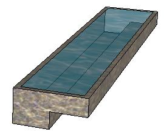

3.2. Dominio y recorrido
La variable independiente \(x\), del ejemplo anterior, varía en el intervalo \([0, 5]\), es decir, el agua de la piscina puede estar entre los \(0\) y \(5\) metros. A este intervalo se le llama dominio de la función \(f\).
Por otro lado, la variable independiente \(y\), varía en el intervalo \([0, 1250]\), lo que significa que los metros cúbicos que tiene la piscina se mueven entre los \(0\) y \(1250\). A este otro intervalo se le denomina recorrido de la función.
Definiciones
|
Llamaremos dominio de una función \(f\) al conjunto de valores que toma la variable independiente, x. Lo denominaremos D(\(f\)) o Dom(\(f\)). En tanto que, llamaremos recorrido de \(f\) al conjunto de valores que toma la variable dependiente, y. Lo denotaremos R(\(f\)) o Im(\(f\)). |
En el ejemplo de la piscina 2, \(D(f)=[0, 5]\) y \(R(f)=[0,1250]\).
Comprueba lo aprendido
Volvemos a la función con la que empezábamos este apartado, velocidad en km/h y litros consumidos a esa velocidad en \(100\ km\). A la vista de la gráfica de la función, y de la tabla que hemos construido en una autoevaluación anterior, completa los siguientes espacios en blanco, que sirven para conocer su dominio y recorrido.
Comprueba lo aprendido
En la siguiente escena puedes practicar con los conceptos dominio y recorrido:
Comprueba lo aprendido
Asocia a cada una de las siguientes funciones que vienen dadas por su expresión analítica, su dominio.
| \(f(x)=\sqrt{x-4}\) | \(g(x)=x^2-3x\) | \(h(x)=\dfrac{x}{4+x}\) |
Comprueba lo aprendido
 |
Para terminar, vamos a volver a la empresa de tratamiento de aguas.
La piscina 3, tiene la forma que aparece en la imagen. Como puedes ver es escalonada. Mide 5 metros de profundidad, 10 de ancho y 50 de largo, como las otras. En la escena de GeoGebra se aprecia el perfil de la piscina. Como en las otras ocasiones, haciendo clic en el control puedes comprobar cómo se va llenando y la relación que hay entre la altura del agua y los metros cúbicos que contiene.
Rellena los siguientes espacios en blanco.